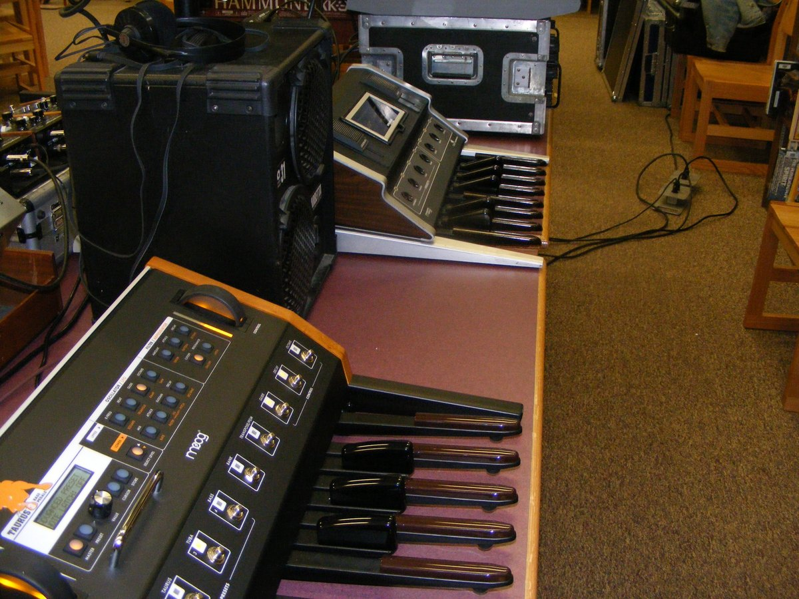

1975
Moog Music (designed by David Luce)
Moog Taurus I (1975)
An analog synthesizer with no keyboard at all — pitch is chosen with the feet on a spinet-organ-style pedal board while the hands play other instruments
